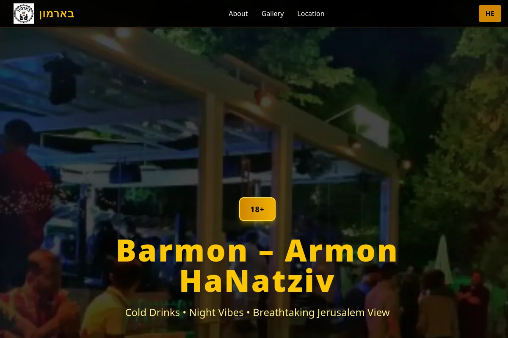

אין לך אתר בכלל
לקוח מחפש אותך בגוגל ומוצא... כלום. או דף פייסבוק מ-2019. הוא לא מתקשר לברר — הוא מתקשר למישהו אחר.
בונה אתרים חדשים ומחדש אתרים קיימים, לעסקים קטנים. מהיר, מותאם לנייד, ומביא פניות — תוך שבועיים, במחיר סגור מראש.
בלי עלות, בלי התחייבות. פשוט נבין אם זה מתאים.
איך אתר נבנה
גלול, ותראה בדיוק מה קורה לעסק שלך.
למה זה משנה
רוב בעלי העסקים לא צריכים אתר "יפה יותר". הם צריכים אתר שעושה את העבודה — בין אם מתחילים מאפס ובין אם מחליפים משהו ישן.
לקוח מחפש אותך בגוגל ומוצא... כלום. או דף פייסבוק מ-2019. הוא לא מתקשר לברר — הוא מתקשר למישהו אחר.
לקוח נוחת, מקבל רושם תוך שנייה, וסוגר. הוא לא ינסח את זה במילים — הוא פשוט ילך למתחרה שנראה רציני יותר.
אתר שלא מייצר טלפונים הוא הוצאה, לא השקעה. אם אין כפתור ברור ואין דרך פשוטה ליצור קשר — אין פניות. גם אם הוא יפה.
העבודות
עסקים, מוסדות ונותני שירות. כל אחד מהם חי ועובד עכשיו.
גלול כדי לעבור ביניהם
מה אני עושה
לא צריך לרדוף אחרי מעצב, מתכנת ומישהו שמבין בפרסום. זה אני.
מאפס, סביב העסק שלך. מותאם לנייד מהשורה הראשונה, לא אחרי.
יש לך אתר שלא עובד? לא תמיד צריך לזרוק. לפעמים צריך.
אתה לא נשאר עם משהו שרק אני מבין. ממשק פשוט, ואתה מעדכן לבד.
מבנה נכון, מהירות, ופרופיל עסקי. כלול, בלי תוספת.
אתר לא מייצר מבקרים. אם צריך תנועה — גם את זה אני מקים.
הדומיין על שמך מהיום הראשון. עוזב — לוקח הכול.
התהליך
בלי הפתעות ובלי "נראה תוך כדי". אתה יודע מה תקבל וכמה זה עולה — לפני שמתחילים.
מבינים מה העסק שלך צריך ומי הלקוח שלך. בלי עלות ובלי התחייבות. אם זה לא מתאים — אני אגיד לך.
אתה מקבל בכתב מה בדיוק ייבנה וכמה זה עולה. המחיר לא זז אחר כך.
מקבל קישור לצפייה תוך כמה ימים, ואומר מה לשנות. עובדים על זה יחד עד שזה נכון.
האתר שלך, על הדומיין שלך, בבעלותך המלאה. אני מלווה גם אחרי.
מחירים
אני מפרסם טווחים כי אני חושב שמגיע לך לדעת לפני שאתה מרים טלפון. המחיר הסופי נקבע בשיחה, לפי מה שהעסק שלך באמת צריך.
כל המחירים כוללים אחסון לשנה הראשונה. הדומיין נרשם על שמך — האתר שלך, תמיד.
לקוחות
שאלות נפוצות
אתר של עמוד אחד — בערך שבוע. אתר תדמית — שבועיים. זה תלוי בעיקר בכמה מהר אתה מחזיר לי תכנים ותשובות, לא בי.
כן, לגמרי. הדומיין נרשם על השם שלך והאתר שייך לך. אם מחר תרצה לעבור למישהו אחר — אתה לוקח את הכול איתך. אני לא מחזיק אותך כבן ערובה.
שינויים קטנים בחודש הראשון — כלולים. אחרי זה, או שאני עושה את זה בתשלום לפי שעה, או שאני בונה לך ממשק פשוט שתוכל לעדכן לבד. תחליט מה נוח לך.
אני מסדר את הכול. השנה הראשונה של האחסון כלולה במחיר. אחרי זה זו עלות שנתית קטנה שמשולמת ישירות לספק — לא דרכי.
בגלל זה אתה רואה את האתר תוך כמה ימים ולא בסוף. אנחנו מתקנים תוך כדי, לא אחרי. אם בשלב הראשון זה לא הולך לכיוון הנכון — עוצרים, בלי עלות.
לא. AI זה מה שמאפשר לי לספק תוך שבועיים במחיר שמתאים לעסק קטן, במקום חודשיים במחיר של סטודיו. התוכן, המבנה וההחלטות — אלה שלי ושלך, לפי העסק שלך.
כן. הדמיות אדריכליות (לפני/אחרי) וסרטונים — אפשר לראות דוגמאות בתיק העבודות. אבל העיקר שלי הוא אתרים לעסקים.

נתן חיים · ירושלים
בניתי מעל 10 אתרים לעסקים ולמוסדות — בתי כנסת, נותני שירות, ועסקים קטנים. אני עובד עם כלי AI, ובגלל זה אני מספק תוך שבועיים מה שסטודיו מספק בחודשיים, במחיר שמתאים לעסק קטן.
אין אצלי צוות, אין תורים, ואין מישהו באמצע. אתה מדבר איתי ישירות, מההצעה ועד אחרי שהאתר עלה.
יצירת קשר
שיחה של 15 דקות. אני שואל על העסק, אתה שואל מה שבא לך, ואם זה לא מתאים — אני אגיד לך את זה ישר.